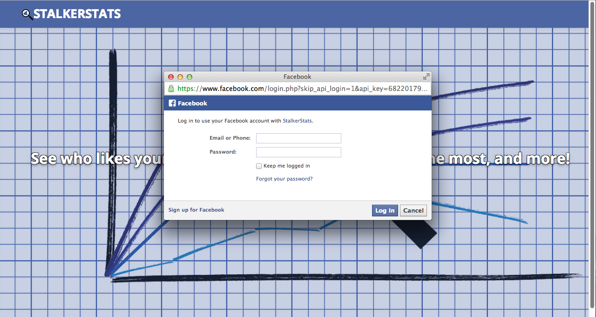
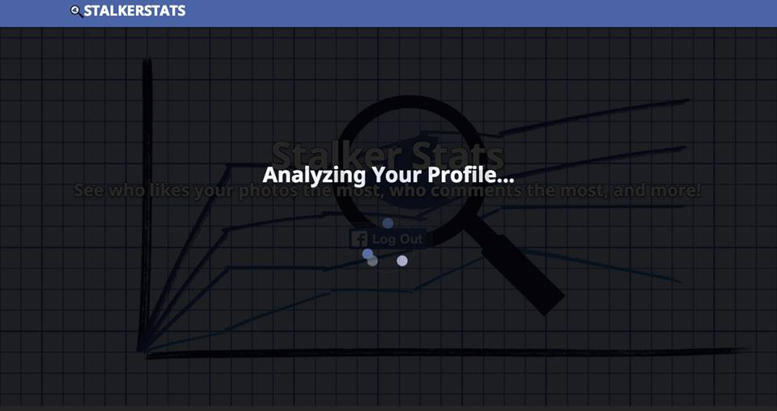
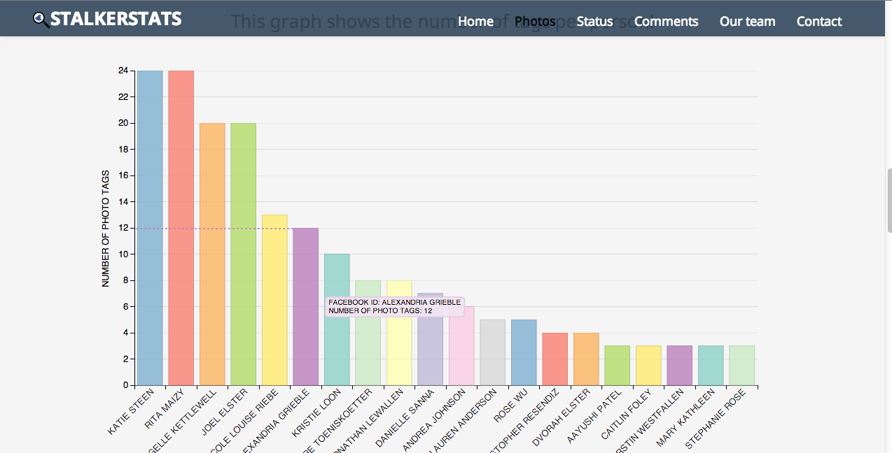
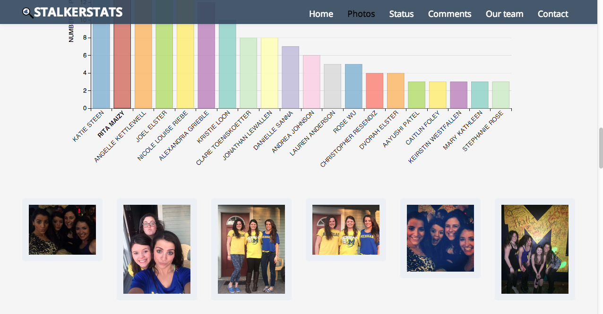
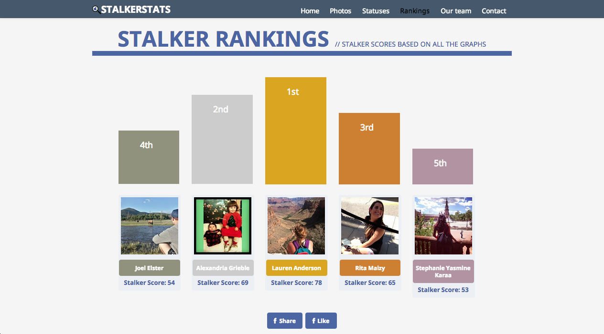
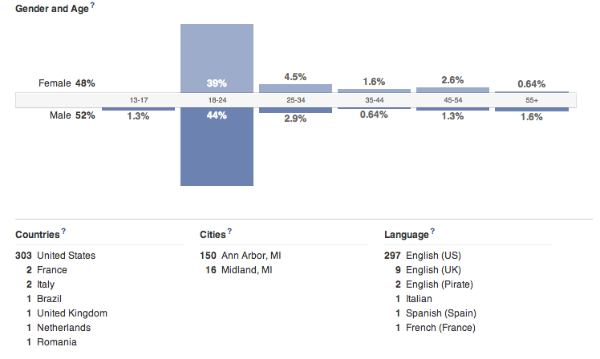
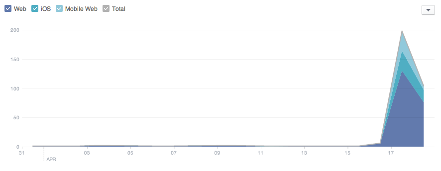

What is Stalker Stats?
This project is a web app for viewing interesting analytics based on Facebook interactions. User's log into their Facebook accounts which then triggers graphs to be displayed showing information ranging from who tags them in the most photos to who likes their status' the most.
Stalker Stats
Instructions
When first navigating to the site users will be prompted by a button to log into their Facebook account.
Facebook Prompt
Once clicking this button a pop up will show the necessary Facebook permissions for the application. If the user chooses to decline these permissions they will not be able to use the Stalker Stats app.

Loading Message
Once a user grants permission a loading message will appear while data is pulled and graphs are generated. Once the data is loaded the loading message will disappear and the user will then be able to scroll down the page.

As the user goes down the page they will view graphs displaying their Facebook analytics. These graphs also have multiple interactions illustrated below.
Graph Hover
Enables a user to hover over a bar on a graph which will subsequently draw a line to the y-axis to more obviously communicate the value of the bar. A tooltip message is also displayed to give more specific details related to the bar.

Graph Click
A user can click on a specific bar in a graph in order to expand data correlating to that bar. The first available instances of that data point are then displayed in an expandable drawer below the current graph.

Rankings
After all graphs are displayed a user can view their Stalker Rankings. These rankings are calculated using an algorithm that is based on how each person placed in the user's graphs. The rankings are displayed in a podium type fashion. With pictures of the people and links to their Facebook profiles. We also give the user an opportunity to Like or Share the app on Facebook.

User Statistics
Since the soft launch on April 17th, 2014 we've had over 300 unquie users log in to Stalker Stats!
Demographics
The chart below indicates our demographics based on both age, gender, and location. As depicted our primary auidence are users between the age of 18 and 24 that are located in the United States. Gender does not seem to affect our audience.

Platform
This graph indicates what client platform users are utilizing to acces our application. While web access is primarily used, about 30% use either iOS or the Mobile Web.

Authors and Contributors
Created in 2014 by @ngrieble, @spradhan12, @srengarajan19, and @warnermc
Support or Contact
Having trouble with Stalker Stats? Feel free to contact the team at stalker.stats@umich.edu and we’ll help you sort it out.